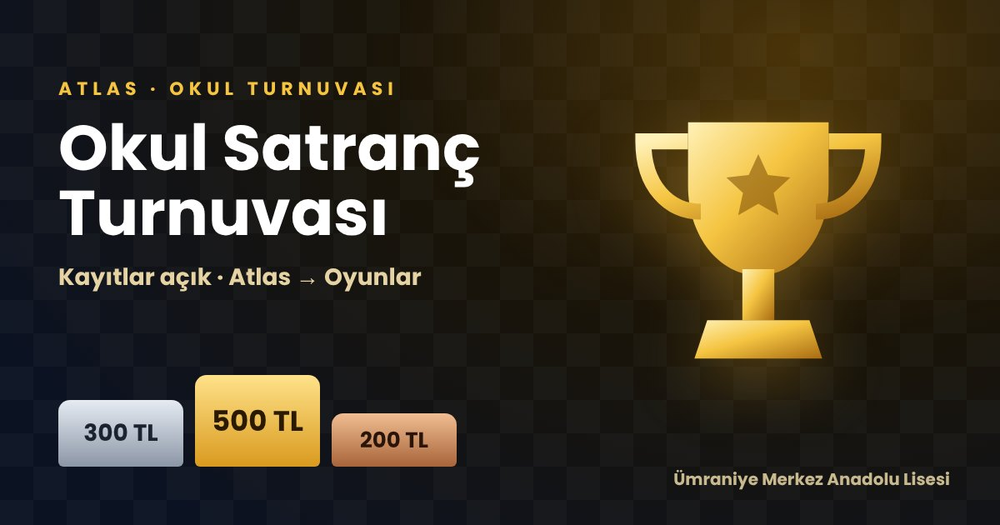

Okul Satranç Turnuvası başlıyor
Okulumuzun ilk satranç turnuvasının kayıtları açıldı. Bütün okul tek turnuvada yarışıyor: 9'dan 12'ye her öğrenci katılabilir, maçlar Atlas üzerinden telefondan oynanır. Final maçı okulda, tahtalarda canlı izlenecek.

Ödüller
Her sınıf seviyesinin en iyisine ayrıca okul müdürümüzün imzalı başarı belgesi verilecek.
Turnuva nasıl ilerleyecek?
Atlas → Oyunlar sayfasındaki turnuva kartından "Turnuvaya katıl".
Kimse elenmez; her turda puanı sana yakın biriyle eşleşirsin.
Ligin en iyi 16 oyuncusu elemeye kalır.
Final okulda tahtalarda canlı izlenir.
Nasıl katılırım?
umalatlas.com.tr adresinde Öğrenci girişinden okul numaran ve şifrenle gir.
Ana ekranda Oyunlar kartına dokun.
En üstteki altın renkli turnuva kartında Turnuvaya katıl'a bas. Kaç arkadaşının katıldığını aynı kartta canlı görebilirsin.
Kurallar
- Her tur bir gün açıktır; maçını o gün içinde istediğin zaman oynarsın. Tur bittiğinde maç bitmemişse sırası gelen oyuncu kaybetmiş sayılır.
- Ligde galibiyet 1, beraberlik ½ puandır. Puan eşitliğinde rakiplerinin topladığı puan fazla olan önde olur.
- Elemede berabere biten maç, renkler değişerek yeniden oynanır.
- Maçlarda serbest yazışma yoktur; oyuncular yalnız hazır ifadelerle selamlaşır. Turnuva okul idaresinin denetimindedir.
Kayıtlar açık
Atlas hesabın yoksa sınıf öğretmeninden giriş bilgilerini al.
Öğrenci girişi · Turnuvaya katıl